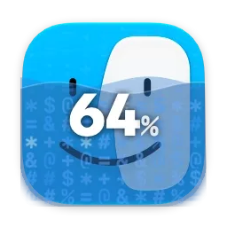
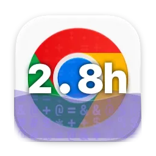
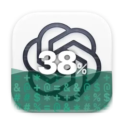
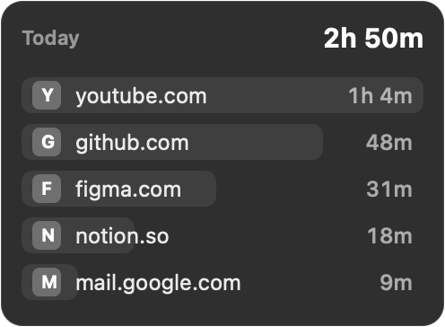
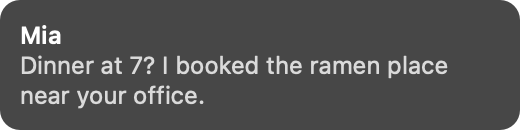
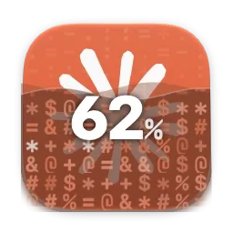
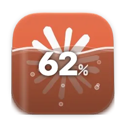
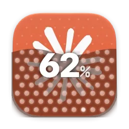
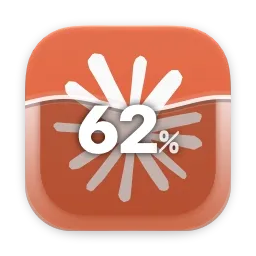

Your Dock, alive.讓 Dock 活起來。
- Free & open source免費開源
- Local only只在本機
- No window, just the Dock沒有視窗，只有 Dock
macOS 14+ · Apple SiliconmacOS 14 以上 · Apple Silicon



Claude and ChatGPT limitsClaude 和 ChatGPT 額度
The icon fills as you use your 5-hour limit. Side ticks mark the week. Red past 80%.5 小時額度用多少，圖示就鋪滿多少。兩側刻度是每週額度。超過 80% 轉紅。
Sessions waiting for you有 session 在等你
Running Claude Code in cmux? A red dot counts the tabs that finished, need permission or wait for input.在 cmux 跑 Claude Code 時，紅點數字是做完、要權限或在等你輸入的分頁數。
Disk and Trash硬碟和垃圾桶
Finder fills with your disk. The Trash fills with what's in it, full at 30 items.Finder 照硬碟用量鋪滿；垃圾桶照裡面的東西鋪滿，30 樣算滿。

Time in your browser今天在瀏覽器待多久
Chrome, Arc, Edge, Brave and ego lite fill up with today's time, full at 8 hours. Hover for your top five sites.Chrome、Arc、Edge、Brave、ego lite 照今天用了多久鋪滿，8 小時算滿。滑鼠停上去看前五名網站。

Latest notification on hover滑過就看最新通知
Rest the pointer on an app to see the last thing it told you. Gone once you open it.滑鼠停在 app 上，看它最後跳出的通知。打開那個 app 就清掉。
Four looks四種樣子

ASCII
Liquid液體
LEDLED 點陣
Glow光邊
Never goes online.不連網。
It reads the limit files Claude Code and Codex already write, cmux's notification list, banners shown on screen and today's browser history. Nothing leaves your Mac, and it never touches your login tokens.只讀 Claude Code 和 Codex 本來就寫在本機的額度檔、cmux 的通知清單、畫面上跳出的通知，和今天的瀏覽紀錄。資料不離開你的 Mac，也不碰登入憑證。
Download for Mac下載 Mac 版